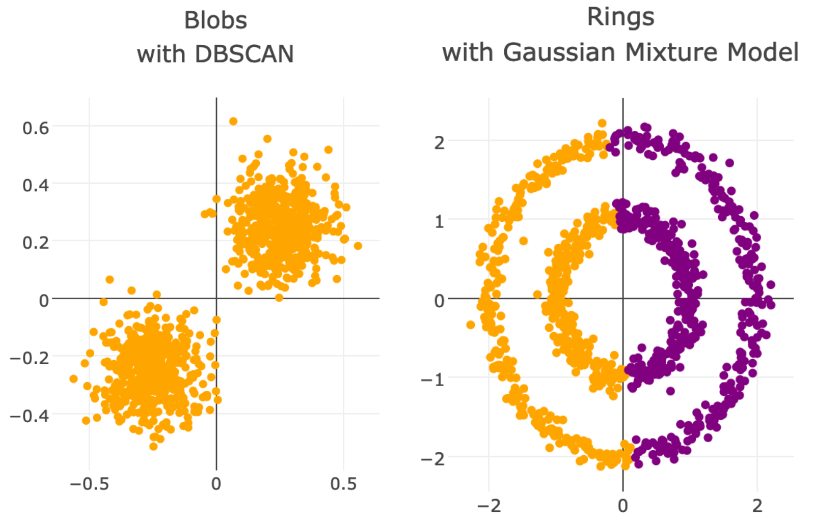

Cluster King is a Flask app written by Matt Sosna. You can check out the source code here!
The goal of this app is to build an intuition behind various clustering algorithms and the data they're well-suited for. You can generate data in various shapes (blobs, crescent moons, and rings), then select between three common clustering algorithms: k-means, Gaussian mixture models, and DBSCAN (density-based spatial clustering of applications with noise). Each of these is a form of unsupervised machine learning.
I've specifically selected data shapes that cause some algorithms to shine and others to struggle. Blobs are easy for k-means and GMMs to partition, for example, but it's remarkably easy for DBSCAN to believe there's only one cluster. This is partly because we explicitly tell k-means and GMMs the number of clusters we're expecting, but also because DBSCAN's main parameter is the maximum distance between points of the same cluster. This value is hard-coded to 0.25 in our app, meaning if you increase the noise or reduce the distance between clusters, you're bound to get some points from each cluster below this distance threshold.
Meanwhile, k-means and Gaussian mixture models have no idea what to do with rings because the clusters have identical x- and y-coordinates for their means. The best these algorithms can do is split the rings down the middle. DBSCAN, meanwhile, thrives: as long as the points within each ring don't pass the minimum distance threshold between rings, it has no problem identifying the clusters.
Image credit: Gemini
{kind=link}